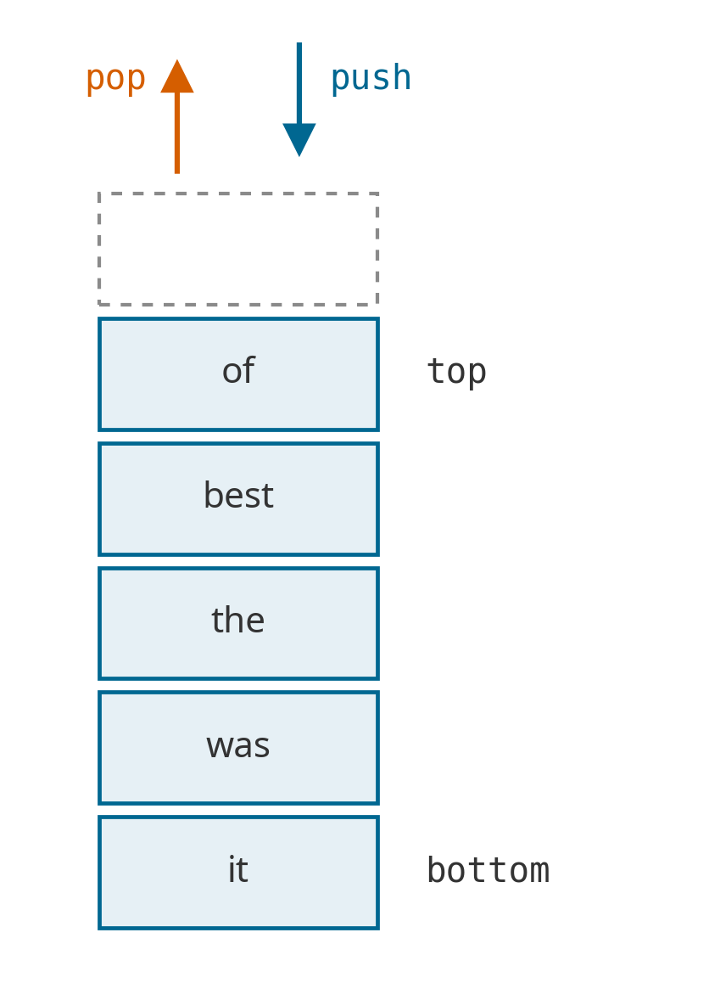
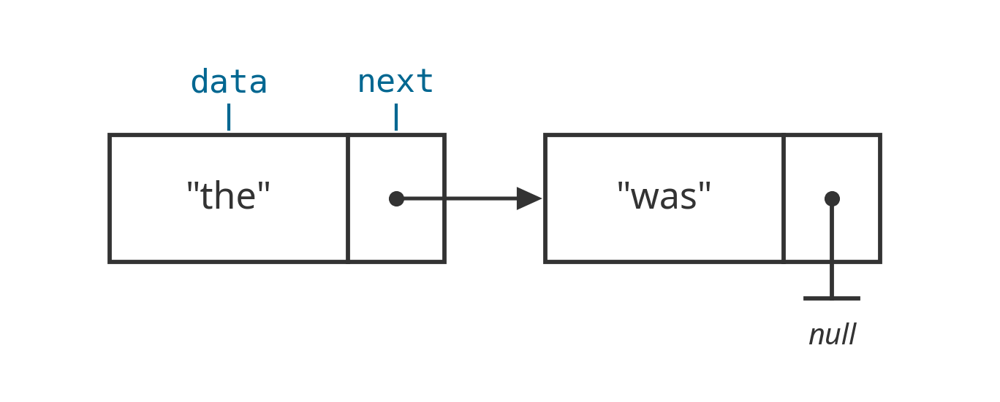
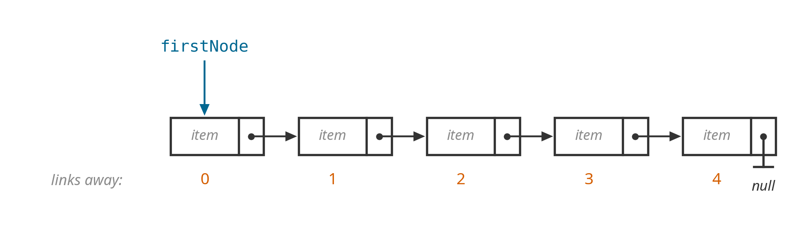
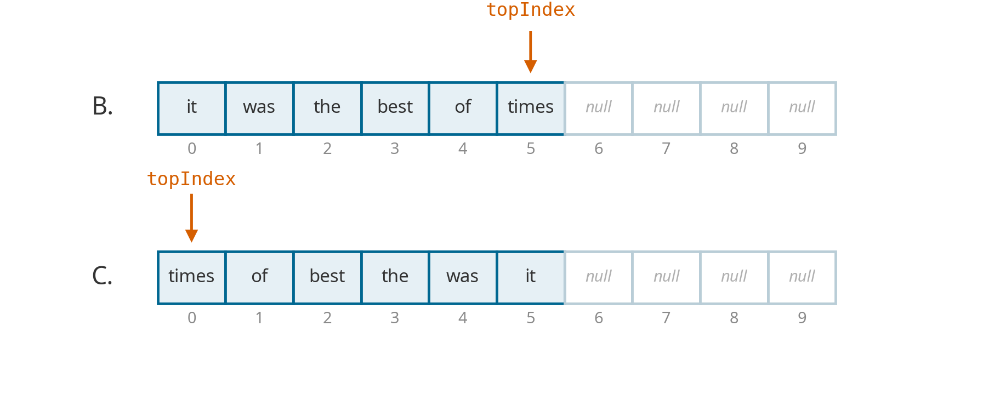
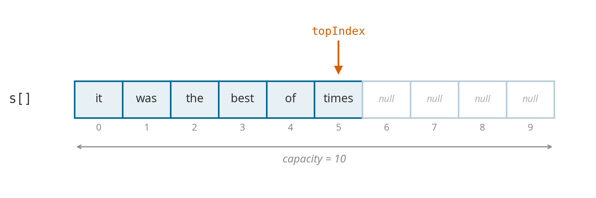
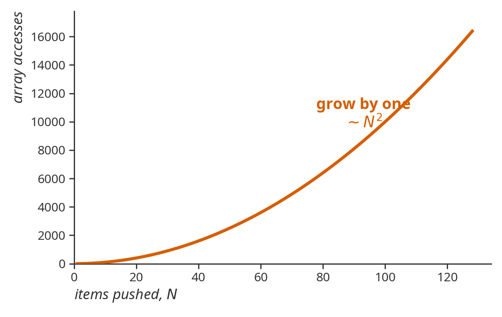
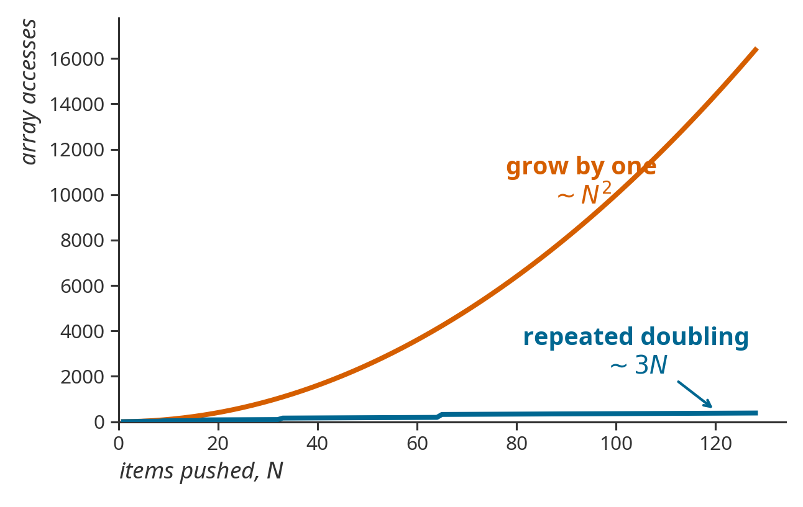
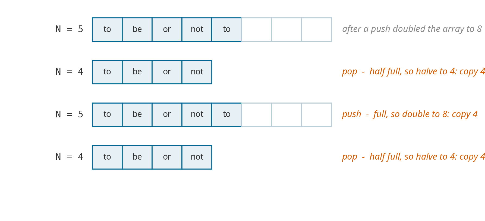
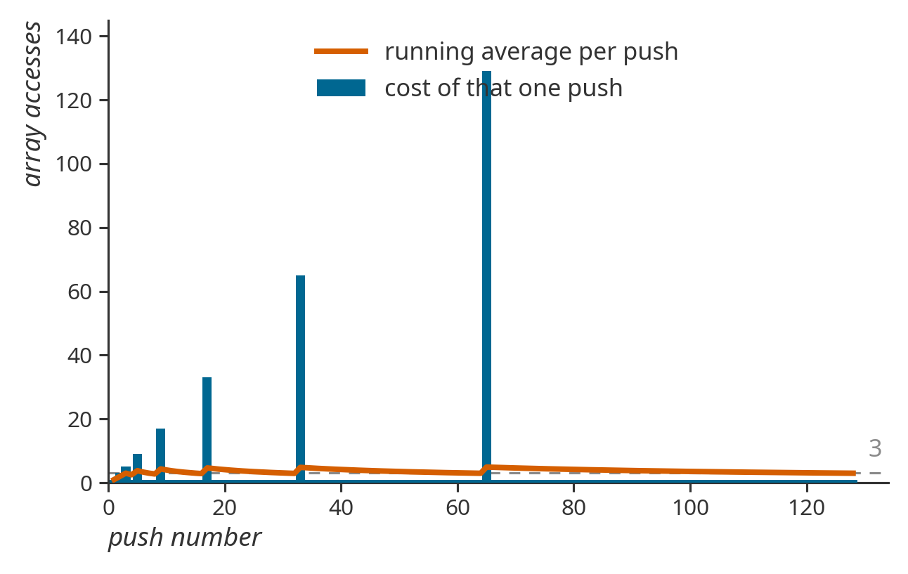
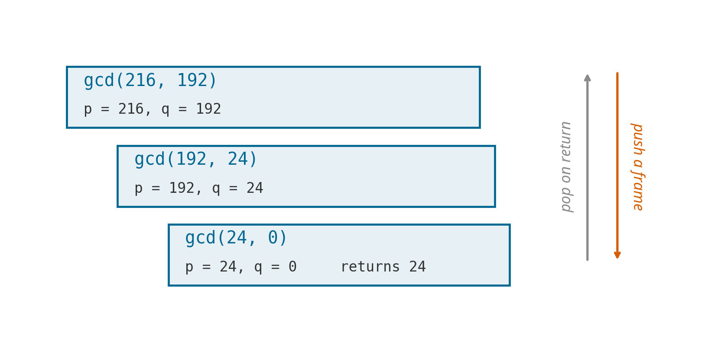

Chapter 2
Stacks and Implementations
Adapted from R. Sedgewick and K. Wayne, Algorithms, 4th edition.
Control-Z
I open an editor and type five words, one at a time:
\[\texttt{it} \;\to\; \texttt{was} \;\to\; \texttt{the} \;\to\; \texttt{best} \;\to\; \texttt{of}\]
Then I press Ctrl-Z twice.
What is on the screen? Say it out loud before I click.
Control-Z
it was the best
The editor threw away of, then best — the two most recent words, newest first. It did not touch it.
Nobody had to tell it which word to remove. The rule was fixed before I typed anything: undo the most recent thing.
The Same Machine
- Back in a browser returns to the page you were on most recently.
- A crashed program prints the method that failed, then its caller, then its caller.
- A compiler matching
}against{reaches for the most recent unmatched{.
One rule, four features. Today we build the thing that enforces it.
What a Collection Does
A collection holds objects. A client only ever asks it three things:
- Add one item.
- Remove one item.
- Is it empty?
Adding is never in doubt — the new item goes wherever new items go.
Removing is a decision. Which item comes back?
Push and Pop
Pile the five typed words up in the order they were typed. Both operations work at the same end, the top.
push. Put a new item on the top.
pop. Take the top item off and hand it back.
Typing a word was a push. Each Ctrl-Z was a pop, which is why of came off before best.

Two Collections, One Question
Both add at the same end: push for a stack, enqueue for a queue.

Which item do we remove? That one decision names the data structure.
Two Collections, One Question
Stack. Examine the item added most recently. LIFO — last in, first out.
Queue. Examine the item added least recently. FIFO — first in, first out.
This chapter is the stack: the API, two ways to build it, and the programs that would be painful to write without one.
Chapter 3 is the queue.
Today
| Part | Question it answers |
|---|---|
| 1 | What does a stack promise its client? |
| 2 | How do you build one out of linked nodes? |
| 3 | How do you build one out of an array? |
| 4 | How does one class hold any type of item? |
| 5 | What is it good for? |
Parts 2 and 3 build the same API twice. Watch what the client can and cannot tell apart.
Part 1
Agree on the API
Client, Implementation, Interface
Interface. A description of the data type and its operations. No code that does anything.
Implementation. The actual code that carries the operations out.
Client. A program that uses the operations, and only the operations.
The whole chapter is the discipline of keeping these three apart.
Why Bother Separating Them
- The client cannot see inside the implementation. So it can choose among many implementations, and swap one for another without changing a line.
- The implementation cannot see the client’s needs. So many clients can reuse the same code.
Design. Modular, reusable libraries.
Performance. Drop in the optimized implementation exactly where it matters, and nowhere else.
The Stack API
| Operation | Task |
|---|---|
push(newEntry) |
Add a new entry to the top of the stack. |
pop() |
Remove and return the top entry. |
peek() |
Return the top entry, leaving the stack unchanged. |
isEmpty() |
Is the stack empty? |
clear() |
Remove every entry. |
Data. A collection of objects of the same type, in reverse chronological order.
Five operations. Nothing here says how any of it is stored.
A Warmup Client
Read words from standard input and print them back in reverse order.
Neither loop reverses anything. The first pushes the words in the order they arrive; the second pops until the stack is empty. The output comes out backwards because pop() always hands back the most recent word.
Reversal is not something the client codes. It is what a stack does.
Reading a Stack
Bottom to top, what is left?
| after | stack (bottom → top) | |
|---|---|---|
| push Jim | Jim | |
| push Jess | Jim Jess | |
| push Jill | Jim Jess Jill | |
| push Jane | Jim Jess Jill Jane | |
| push Joe | Jim Jess Jill Jane Joe | |
| pop | Jim Jess Jill Jane | returned Joe |
| pop | Jim Jess Jill | returned Jane |
Question
Bottom to top, what is in the stack?
- A 12 4
- B 12 4 6
- C 12 4 4
- D 12 6 6
Question
| statement | stack (bottom → top) | |
|---|---|---|
| push 12 | 12 | |
| push 4 | 12 4 | |
| push s.peek()+2 | 12 4 6 | peek returned 4 |
| pop | 12 4 | threw the 6 away |
| push s.peek() | 12 4 4 | peek returned 4 again |
The trap. peek() looks and pop() removes. Read the third line as “push two more than the top” and you land on B.
Question
What does it print?
- A 0 1 2 3 4
- B 4 3 2 1 0
- C 4 3 2
- D nothing — it throws an exception
Question
i counts up while s.size() counts down. They meet in the middle.
| i | s.size() | i < size? | printed |
|---|---|---|---|
| 0 | 5 | yes | 4 |
| 1 | 4 | yes | 3 |
| 2 | 3 | yes | 2 |
| 3 | 2 | no | — loop ends |
Half the stack is still there, and nothing warned you. A loop condition that the loop body changes is a bug waiting to happen.
Two Ways to Fix It
Read the size once, before the loop touches anything.
The second needs no counter at all. Prefer it.
A Decision the API Has to Make
Q. A client calls pop() on an empty stack. What should happen?
- A Assume it never happens — document it and move on.
- B Return
null. - C Throw an exception.
A is a crash at some unrelated line, later. B is worse: null is a legal item, so the client cannot tell “empty” from “the top was null.”
A Decision the API Has to Make
C fails at the line that made the mistake, with a name that says what went wrong: EmptyStackException.
That decision is part of the interface, not the implementation. Every implementation we write has to honor it, and the client can rely on it without knowing which one it got.
Guiding principle. Fail where the bug is, not where the damage shows up.
The Interface, in Java
/** An interface for the ADT stack. */
public interface StackInterface<T>
{
/** Adds a new entry to the top of this stack. */
public void push(T newEntry);
/** Removes and returns this stack's top entry.
@throws EmptyStackException if the stack is empty. */
public T pop();
/** Retrieves this stack's top entry, leaving the stack unchanged.
@throws EmptyStackException if the stack is empty. */
public T peek();
/** Detects whether this stack is empty. */
public boolean isEmpty();
/** Removes all entries from this stack. */
public void clear();
} // end StackInterfaceThe Interface, in Java
Everything a client is allowed to know is on the previous slide.
T is a type parameter — a promise that this works for strings, integers, or anything else, without a separate class for each. Part 4 earns that promise.
Now: two completely different ways to keep it.
Part 2
A Chain of Nodes
Where Do the Items Live?
The API is settled, and it said nothing about storage. Now we owe it an implementation.
- A client may push ten items or ten million, and never says which.
- It never says when it will stop, either.
A Java array has its length fixed the moment it is created, so asking for one block up front means guessing.
So don’t guess. Ask for one small box per item, and let each box remember where the next one is.
One Item, One Node
A node is a small object with two fields: data holds one item, and next holds a reference to the node after it — or null at the end.

A node knows nothing about the chain as a whole. One item, one neighbour.
The Node Class
The same two fields, as a Java class.
getData() reads the item; getNext() follows the chain one link further. Both Node and its fields are private — a client never sees one.
One Handle, One Direction

The stack object stores one reference, to the first node. Links run one way: from a node you reach the next, never the one before.
The first node is free. Any other one costs a walk down the chain.
Which End Is the Top?
Push it, was, the, best, of in that order. push and pop both act on the top — where should the top sit so that both are constant time?

- A not efficiently
- B top at the end
- C top at the front
Put the Top at the Front
Option B puts the top four links from the only reference we hold, so every push and every pop would walk past all \(N\) nodes to reach it.
Put the top at the front, on the node we already have in hand.

The first node is now the top, so the handle is named topNode. push inserts before it, pop removes it — neither one walks.
pop, in Two Moves


return top; sends the saved item back to the client. The old node is now unreachable, so Java can reclaim it.
Write pop
peek() is written for you. Complete the one update that leaves the stack one node shorter.
pop in live code: with the line missing, the chain never shrinks.
peek and pop, in Java
peek() performs the empty-stack check before topNode changes.
push, in Two Moves


No existing node moves. push creates one node and changes one reference.
Write push
newNode already stores the new entry and points to the old top. Complete the update that makes it the new top.
push in live code: with the line missing, the chain stays empty.
push, in Java
newNode preserves the link to the old chain before topNode changes.
Fields and Helpers
public final class LinkedStack<T> implements StackInterface<T>
{
private Node topNode; // first node in the chain
public LinkedStack() { topNode = null; }
public boolean isEmpty() { return topNode == null; }
public void clear() { topNode = null; }
private class Node
{
private T data;
private Node next;
private Node(T entry, Node nextNode) { data = entry; next = nextNode; }
private T getData() { return data; }
private Node getNext() { return next; }
} // end Node
} // end LinkedStackclear() changes one reference; the entire old chain becomes unreachable.
Question
Push it, was, the, then call this. What comes back?
- A "the" — same as the correct version
- B
EmptyStackException - C "the", and the stack loses two items
- D "was", and "the" is lost
Question
topNode = topNode.getNext(); runs first, so by the time peek() reads topNode.getData(), topNode already points at was.
the — the actual top — is now unreachable. It was never returned, and it is not on the stack. It is simply gone.
The trap. was comes back from pop() looking like the item that was removed — but it is still sitting on the stack as the new top.
The rule. topNode is the only handle onto the chain. Save what you need before you move the pointer that finds it — which is exactly why the real pop() calls peek() first.
What It Costs
Proposition. Every operation takes constant time in the worst case.
Not on average. Not usually. Every time.
Each operation reads or writes a fixed number of references, and that count does not depend on how many items the stack holds.
push |
pop |
peek |
isEmpty |
clear |
|
|---|---|---|---|---|---|
| worst case | \(O(1)\) | \(O(1)\) | \(O(1)\) | \(O(1)\) | \(O(1)\) |
What It Costs in Memory

Princeton’s model. A stack of \(N\) items uses about \(40N\) bytes on a 64-bit JVM with 8-byte references.
Only \(8\) of those \(40\) point at the item. The other \(32\) are the price of being a node.
This counts the stack, not the items. Those belong to the client.
Part 3
An Array and an Index
Where Does the Top Go?
Same five pushes, now into an array of capacity \(10\).

- A not efficiently
- B top at the end
- C top at index 0
Where Does the Top Go?
Option C puts the top where every push and pop has to shift all \(N\) items to make room — linear time again, for the same reason as before.
Put the top at the end, where growing and shrinking cost nothing.

Both answer the same way: put the top where the structure is already cheap.
Fixed Capacity, in Java
stack[]holds the items;topIndexis the index of the top.- An empty stack is
topIndex == -1. pushstores attopIndex + 1;popreads attopIndex.
One of these two has a bug that no test will ever fail on.
Two Ways to Break It
Underflow. pop or peek on an empty stack. Already settled in Part 1: throw EmptyStackException. Both implementations agree, because it is the interface’s decision.
Overflow. push onto a full array. The linked version cannot have this bug — it allocates a node whenever it needs one.
This is the first place the client could tell the two apart. We are going to make sure it can’t.
Why pop Writes a null
Loitering. Holding a reference to an object you will never use again. The item is popped, the client has forgotten it, and the array still points at it — so the collector cannot reclaim it.
Write push and pop
live code
Write the version that does not loiter.
The other order — stack[topIndex + 1] = newEntry; then topIndex++; — is just as correct.
Who Picks the Capacity?
How is the client supposed to know the number is 100?
It isn’t. push is supposed to work, always. A constructor that demands a capacity is not an implementation of our interface — it is a different, smaller promise.
Q. So how do we grow the array?
Place Your Bets
First try. When the array is full, make a new array one slot bigger and copy everything across.
Building a stack of \(N\) items costs \(N\) stores, plus a copy on nearly every push. Copying \(k - 1\) items costs \(2(k-1)\) array accesses — one read and one write each.
How many array accesses to push \(N\) items? Commit to an answer.
| about \(2N\) | about \(N \log N\) | about \(N^2\) | about \(2^N\) |
Grow by One: the Bill
\[N \;+\; \bigl(2 + 4 + \cdots + 2(N-1)\bigr) \;=\; N + N(N-1) \;=\; N^2\]

Quadratic. A stack of a million items costs a trillion array accesses to build.
And every one of those accesses is spent on an operation the linked version does for free.
Repeated Doubling
The fix. Do not resize often. Resize rarely, and take a big step when you do.
Repeated Doubling: the Bill
Doubling to capacity \(k\) copies \(k/2\) items, so it costs \(k\) accesses. Every doubling before that one cost half as much.
\[N \;+\; \bigl(2 + 4 + 8 + \cdots + N\bigr) \;=\; N + 2(N-1) \;\sim\; 3N\]

Repeated Doubling: the Bill
| \(N\) | grow by one | repeated doubling |
|---|---|---|
| \(16\) | \(256\) | \(46\) |
| \(128\) | \(16{,}384\) | \(382\) |
| \(1{,}024\) | \(1{,}048{,}576\) | \(3{,}070\) |
Same interface. Same client code. One line of the implementation.
Now Shrink It
A stack that grew to a million and then popped back to ten should not still be holding a million slots.
First try. Halve the array when it is one-half full.

Now Shrink It
Sit at the boundary and alternate push, pop, push, pop. Every single operation copies the whole array.
Cost. \(M\) operations, each proportional to \(N\). The worst case is back to quadratic — and this time an adversary does not even need to try hard.
The bug is that grow and shrink fire at the same place. Leave a gap.
Halve at One Quarter
Invariant. The array is always between \(25\%\) and \(100\%\) full.
After a resize it sits at half full, so it takes \(N/2\) more operations in either direction to trigger the next one. The gap pays for the copy.
Amortized Analysis
Definition. Start from an empty data structure. The amortized cost of an operation is the average cost per operation over a worst-case sequence of them.

Individual pushes are unbounded — the one that doubles a \(64\)-slot array costs \(129\) accesses.
The running average never passes \(3\).
Amortized Is Not Average
Proposition. Starting from an empty stack, any sequence of \(M\) push and pop operations takes time proportional to \(M\).
Average case averages over inputs, and assumes the inputs are random. An adversary breaks it.
Amortized cost averages over the sequence, and holds for the worst sequence there is. There is nothing left to assume.
That is a guarantee, and you can promise it to a customer.
The Performance Table
Order of growth of the running time, for a resizing-array stack holding \(N\) items:
| best | worst | amortized | |
|---|---|---|---|
| construct | \(1\) | \(1\) | \(1\) |
push |
\(1\) | \(N\) | \(1\) |
pop |
\(1\) | \(N\) | \(1\) |
isEmpty |
\(1\) | \(1\) | \(1\) |
The \(N\) in the worst-case column is real — it is the doubling — and it is also the reason the amortized column is \(1\).
What It Costs in Memory
Proposition. A resizing-array stack with \(N\) items uses between about \(8N\) and \(32N\) bytes.
- \(\sim 8N\) when the array is full — one \(8\)-byte reference per item.
- \(\sim 32N\) when it is one-quarter full — the array holds \(4N\) slots.
Against \(\sim 40N\) for the chain, whose worst case is its best case.
The array wastes slots. The chain wastes bytes per item. Neither is free.
Head to Head
| linked list | resizing array | |
|---|---|---|
push / pop |
\(O(1)\) worst case | \(O(1)\) amortized |
| the slow operation | there isn’t one | the push that doubles |
| memory per item | \(\sim 40\) bytes | \(8\) to \(32\) bytes |
| overhead | two references per item | unused slots |
Use the chain when no single operation may be slow — an animation frame, a control loop, anything with a deadline.
Use the array when total time and memory matter more than any one operation. Most of the time, this one.
Head to Head
The client wrote push and pop and never found out which it got.
That is what the interface bought: two data structures with different worst cases, different memory profiles, and no shared code, behind one set of five operations.
Part 4
One Stack, Any Type
We Want More Than One Stack
We built a stack of strings. We also want a stack of URLs, a stack of integers, a stack of delimiters, a stack of vans.
Attempt 1. Write a separate class for each type.
- Writing the same code five times is tedious and error-prone.
- Maintaining five copies of it is worse: you will fix the bug in four.
This was the only reasonable approach until Java 1.5. We can do better.
Attempt 2: A Stack of Object
Everything in Java is an Object, so store Object and let the client cast on the way out.
It compiles. It also pops an Orange and casts it to Apple.
ClassCastException, at run time, in front of a user.
Attempt 3: Generics
The same mistake, caught by javac before the program ever runs.
Guiding principle. Welcome compile-time errors; avoid run-time errors.
The Same Class, Parameterized
Every String became T. That is the whole edit.
Generic Arrays, in Theory
The chain generalized without a fight because it never names an array type. The array implementation is not so lucky.
Generic array creation is not allowed in Java.
Generic Arrays, in Practice
Allocate an Object[] and cast it. javac -Xlint:unchecked warns that it cannot verify the cast; @SuppressWarnings says we checked, it is safe — the array is private, and only push ever writes to it.
Why does Java make us do this? Short answer: backward compatibility. Long answer: type erasure, and it is a course of its own.
Primitives and Autoboxing
Q. T must be a class. What about int, double, char?
Wrapper types. Every primitive has a class that holds one: Integer for int, Character for char.
Autoboxing. The compiler inserts the conversion for you.
Bottom line. One class, any type of data.
Looking Without Touching
Design challenge. Let a client walk the items — top first — without telling it whether they live in a chain or an array.
Java’s answer: implement java.lang.Iterable<T>, and the client gets the for-each loop for free.
That loop is the only thing the client writes. Which representation it is walking never comes up.
Iterable and Iterator
An Iterable has a method that hands back an Iterator.
Two interfaces, three methods. Every collection in the Java library implements them, and so can yours.
The Array Iterator
Walking an array-backed stack top-first means counting down from topIndex.
The chain’s iterator walks topNode, topNode.next, and so on — same order, different code, and the client cannot tell.
Why Not java.util.Stack?
It exists. It has push, pop, peek, and iteration. And you should not use it.
It extends java.util.Vector, so it also has get(int) and remove(int) — a “stack” whose client can reach into the middle and pull something out.
The design mistake. A stack has a list. It is not a kind of list. Inheriting from Vector published every operation the interface was written to hide.
The Bug Report
The iterator method on
java.util.Stackiterates through a Stack from the bottom up. One would think that it should iterate as if it were popping off the top of the Stack.— Java bug report, June 27, 2001
It was an incorrect design decision to have
StackextendVector(“is-a” rather than “has-a”). We sympathize with the submitter but cannot fix this because of compatibility.— status: closed, will not fix
Twenty-five years later it is still there. Interface decisions outlive the people who make them.
Part 5
What Stacks Are For
Where You’ve Used One
- Undo in a word processor, and Back in a web browser.
- The runtime stack that tracks the methods a program is inside.
- The Java virtual machine, which is a stack machine.
- Parsing, in every compiler ever written.
- PostScript, the language your printer speaks.
Every program left in this chapter is painful to write without a stack and nearly trivial with one.
How a Function Call Works
- Call: push the local variables and the return address.
- Return: pop them, and resume where the address says.

How a Function Call Works
A recursive function is one that calls itself, so it appears in several frames at once — with different local variables in each.
The stack is what keeps those copies apart. gcd(216, 192) has not finished; it is waiting under two other frames for an answer.
Consequence. Any recursion can be rewritten with an explicit stack, because that is all recursion ever was.
Undo, for Real
Slide 1 of this deck was Ctrl-Z. This is the program under it.
Characters arrive one at a time, and [undo] means throw the last one away:
\[\texttt{h\;e\;l\;[undo]\;l\;l\;o\;[undo]\;o\;w\;o\;r\;l\;d}\]
What is left at the end?
helloworld
Undo, for Real
work it
Push every character. On [undo], pop one — if there is one.
| read | stack (bottom → top) | |
|---|---|---|
| h | h | |
| e | he | |
| l | hel | |
| [undo] | he | popped l |
| llo | hello | three pushes |
| [undo] | hell | popped o |
| oworld | helloworld | six pushes |
Twelve pushes, two pops, ten characters left. And the answer is sitting upside down.
The Stack Is Backwards
s holds helloworld bottom to top, so d is what comes off first. Popping it spells dlrowolleh.
Pour s into a second stack t and the order flips. Popping t spells the answer.
That is the warmup client from Part 1, which reversed its input without a reversing loop. Here we want the reversal, so we do it twice.
Write the Undo Loop
live code
Algorithm processString(S):
Create an empty stack s
for each char c in S:
if (c != [undo]):
// your line here ____________________
else if (!s.isEmpty()):
// your line here ____________________
Create an empty stack t // flip s into t
// your two lines here ____________________
Create String str // read t into str
// your two lines here ____________________
return strThe Undo Loop
Cost. \(O(n)\) time — each character is pushed at most twice and popped at most twice. \(O(n)\) space — s and t never hold more than \(n\) items between them.
Balanced Delimiters
Every (, [, and { in a program must be closed — by the matching symbol, and in the right order.
\[\{\,[\,(\;)\,]\,\}\quad\text{yes}\qquad\qquad \{\,[\,(\;]\;)\,\}\quad\text{no}\]
The insight. When a closing symbol arrives, it must match the most recent unmatched opening symbol.
“Most recent” is the word that tells you to reach for a stack.
Balanced Delimiters
work it
Scan { [ ( ) ] } left to right. Push on an opener; on a closer, pop and check the pair.
| read | stack (bottom → top) | what happened |
|---|---|---|
| { | { | push |
| [ | { [ | push |
| ( | { [ ( | push |
| ) | { [ | popped ( — pairs |
| ] | { | popped [ — pairs |
| } | (empty) | popped { — pairs |
Ends empty, never mismatched. Balanced.
Three Ways to Fail
| expression | stops at | because |
|---|---|---|
| { [ ( ] ) } | ] | popped ( — wrong type |
| [ ( ) ] } | } | stack already empty |
| { [ ( ) ] | end of input | stack still holds { |
Three different bugs, three different checks. Two of them are easy to forget, and both are one line.
Balanced Delimiters, in Java
public static boolean checkBalance(String expression)
{
StackInterface<Character> openDelimiters = new LinkedStack<>();
boolean isBalanced = true;
int index = 0;
while (isBalanced && (index < expression.length()))
{
char next = expression.charAt(index);
switch (next)
{
case '(': case '[': case '{':
openDelimiters.push(next);
break;
case ')': case ']': case '}':
if (openDelimiters.isEmpty()) // failure 2
isBalanced = false;
else
isBalanced = isPaired(openDelimiters.pop(), next); // 1
break;
default: break; // ignore the rest
}
index++;
}
return isBalanced && openDelimiters.isEmpty(); // failure 3
}Infix, Prefix, Postfix
Three places to write a binary operator, all saying the same thing:
| notation | the operator sits | example |
|---|---|---|
| infix | between its operands | \(a + b\) |
| prefix | before its operands | \(+\;a\;b\) |
| postfix | after its operands | \(a\;b\;+\) |
Infix is what we write and the only one that needs precedence rules to be read. 3 * 2 + 1 means \(7\) only because we agreed * binds tighter.
Postfix needs no such agreement, and no parentheses. That is why machines use it.
Question
What does this postfix expression evaluate to?
\[6\;\;3\;\;2\;\;+\;\;*\]
- A 18
- B 36
- C 24
- D 11
- E 30
Question
The trap. \(18\) is what you get by reading 6 3 * first — left to right, the way infix trains you.
Postfix says otherwise: an operator applies to the two most recent values, which here are \(3\) and \(2\).
\[6 \times (3 + 2) \;=\; 30\]
Evaluating Postfix
One stack. Push every value; on an operator, pop two, apply, push the result.
| read | value stack (bottom → top) | what happened |
|---|---|---|
| 6 | 6 | push |
| 3 | 6 3 | push |
| 2 | 6 3 2 | push |
| + | 6 5 | popped 2 then 3, pushed 3 + 2 |
| * | 30 | popped 5 then 6, pushed 6 × 5 |
Watch the order. The second pop is the left operand. For \(+\) and \(\times\) nobody notices; for \(-\), \(/\), and \(\hat{}\) it is the whole answer.
The Postfix Algorithm
public static double evaluatePostfix(String postfix)
{
StackInterface<Double> valueStack = new LinkedStack<>();
for (String token : postfix.split("\\s+"))
{
if (isOperator(token))
{
double operandTwo = valueStack.pop(); // right operand
double operandOne = valueStack.pop(); // left operand
valueStack.push(apply(token, operandOne, operandTwo));
}
else
valueStack.push(Double.parseDouble(token));
}
return valueStack.peek();
}No precedence table. No parentheses. No second stack.
Your Turn
work it
Evaluate each, and write the infix expression it came from.
\[2\;\;3\;\;2\;\;4\;\;*\;\;+\;\;* \qquad\qquad 1\;\;2\;\;3\;\;4\;\;\hat{}\;\;*\;\;+\]
| postfix | infix | value |
|---|---|---|
| \(2\;3\;2\;4\;*\;+\;*\) | \(2 \times \bigl(3 + (2 \times 4)\bigr)\) | \(22\) |
| \(1\;2\;3\;4\;\hat{}\;*\;+\) | \(1 + \bigl(2 \times (3^4)\bigr)\) | \(163\) |
Recovering the infix form is the same trace read backwards: each operator names the two subexpressions sitting under it.
Dijkstra’s Two-Stack Algorithm
Goal. Evaluate a fully parenthesized infix expression directly, with no conversion step.
Keep two stacks — one for values, one for operators — and one rule per token:
- Value — push it onto the value stack.
- Operator — push it onto the operator stack.
- Left parenthesis — ignore it.
- Right parenthesis — pop an operator and two values; apply and push.
That is the entire algorithm. — E. W. Dijkstra
The Demo
call the next row
\[(\,1 + (\,(\,2 + 3\,) * (\,4 * 5\,)\,)\,)\]
| read | value stack | operator stack |
|---|---|---|
| 1 | 1 | |
| + | 1 | + |
| 2 | 1 2 | + |
| + | 1 2 | + + |
| 3 | 1 2 3 | + + |
| ) | 1 5 | + |
| * | 1 5 | + * |
| 4 | 1 5 4 | + * |
| * | 1 5 4 | + * * |
| 5 | 1 5 4 5 | + * * |
| ) | 1 5 20 | + * |
| ) | 1 100 | + |
| ) | 101 |
Why It Works
Every time the algorithm meets an operator surrounded by two values inside parentheses, it leaves the result on the value stack — so the run is the same as if that subexpression had been the value all along.
\[(\,1 + (\,(\,2 + 3\,) * (\,4 * 5\,)\,)\,) \;\longrightarrow\; (\,1 + (\,5 * (\,4 * 5\,)\,)\,)\]
Apply the same argument again, and again: \[(\,1 + (\,5 * 20\,)\,) \;\longrightarrow\; (\,1 + 100\,) \;\longrightarrow\; 101\]
That is an interpreter — it reads a language and computes what the language says.
Infix to Postfix
The other route: convert once, then evaluate with one stack. One rule per token, and the stack holds operators, not values.
| token | what to do |
|---|---|
| operand | append it to the output |
^ |
push it |
+ - * / |
pop while the top has at least equal precedence, then push it |
( |
push it |
) |
pop until ( is popped; discard both |
| end of input | pop whatever is left |
Infix to Postfix
call the next row
\[a + b * (\,c + d\,)\]
| read | output | operator stack | what happened |
|---|---|---|---|
| a | a | append | |
| + | a | + | stack empty, push |
| b | ab | + | append |
| * | ab | + * | + is lower, push |
| ( | ab | + * ( | push |
| c | abc | + * ( | append |
| + | abc | + * ( + | ( blocks the pop, push |
| d | abcd | + * ( + | append |
| ) | abcd+ | + * | pop to ( , discard both |
| end | abcd+*+ | pop the rest |
Your Turn
work it
Convert to postfix. The stack column is the part to write down.
\[a \,/\, b * \bigl(\,c + (\,d - e\,)\,\bigr)\]
Answer. \(\;a\;b\;/\;c\;d\;e\;-\;+\;*\)
Two checkpoints worth arguing about:
- At
*the top is/— equal precedence, so it pops. Left to right, as arithmetic requires. - At the first
)only the-comes off; the+sits below a(.
Your Turn
Three more, for the same rules and no parentheses at all:
| infix | postfix |
|---|---|
| \(a + b * c\) | \(a\;b\;c\;*\;+\) |
| \(a - b + c\) | \(a\;b\;-\;c\;+\) |
| \(a \hat{}\; b \hat{}\; c\) | \(a\;b\;c\;\hat{}\;\hat{}\) |
The third is the one that catches people. ^ is right associative — \(a^{(b^c)}\), not \((a^b)^c\) — which is exactly why the rules push ^ without popping the ^ already there.
Drop the Parentheses
Dijkstra’s algorithm gives the same answer if each operator is written after its two values:
\[(\,1\,(\,(\,2\;3\;+\,)\;(\,4\;5\;*\,)\;*\,)\;+\,)\]
And now nothing depends on the parentheses at all:
\[1\;\;2\;\;3\;+\;4\;\;5\;*\;*\;+\]
Drop the Parentheses
Postfix, or reverse Polish notation, after Jan Łukasiewicz.
Used by PostScript, Forth, HP calculators, and the Java virtual machine — a machine with one stack evaluates it without ever looking ahead.
A stack turned an expression into a language.
The Question, Reversed
Part 1 opened with two collections that insert at the same end, and which item you remove named the structure.
Now the exercise. You have stacks and nothing else. Build a queue — enqueue at the back, dequeue from the front.
A stack hands back the newest item; a queue needs the oldest. One reversal apart — and you just wrote a reverser.
Two Stacks, One Queue
s1takes whateverenqueueis given, and does nothing else.dequeuepourss1intos2, which reverses it, then popss2.- Pour only when
s2is empty. Whatever is already ins2is already in the right order.
The bug to avoid. Pour while s2 still holds items and two generations interleave: the oldest item is no longer on top, and nothing throws.
Two Stacks, One Queue
work it
| call | s1 | s2 | returns |
|---|---|---|---|
| enqueue 1 | 1 | (empty) | |
| enqueue 2 | 1 2 | (empty) | |
| enqueue 3 | 1 2 3 | (empty) | |
| dequeue | (empty) | 3 2 | 1 — poured first |
| dequeue | (empty) | 3 | 2 — no pour |
| enqueue 4 | 4 | 3 | |
| dequeue | 4 | (empty) | 3 — no pour |
| dequeue | (empty) | (empty) | 4 — poured |
Out came \(1, 2, 3, 4\). The 4 arrived after the 2 came out, and still had to wait behind the 3.
Write the Queue
live code
The Queue
The second isEmpty() is not a duplicate of the first. The first asks whether to pour; the second catches the case where the pour found nothing to move, and the queue really is empty.
What the Queue Costs
enqueue is one push. Constant time, always.
A single dequeue can cost \(O(n)\) — the one that finds s2 empty and carries the whole queue across.
Amortized \(O(1)\). Over any sequence of calls, each item is pushed twice and popped twice and then it is gone. Four operations per item, however the calls interleave. Space is \(O(n)\).
Part 3’s argument, on a different data structure. The worst single operation is slow; the sequence is not.
What You Can Do Now
- State the five stack operations without naming a representation.
- Write
pushandpopfor both implementations from an empty method body, and give the cost of each. - Say which implementation a client should get, why doubling makes
pushamortized \(O(1)\), and why the array halves at one quarter. - Trace balanced delimiters, postfix evaluation, infix-to-postfix, and Dijkstra’s two-stack algorithm by hand.
- Write the undo loop and the two-stack queue, and say what each costs.
Next: the same five questions, with the other removal rule.

CSCI 2336 Data Structures